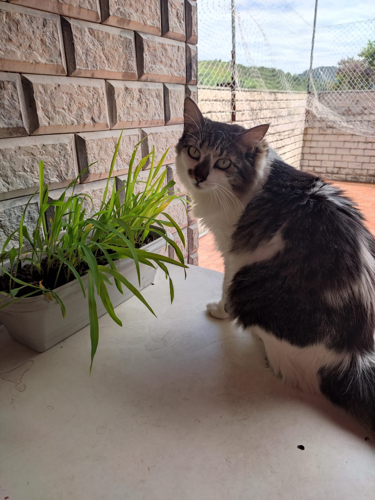
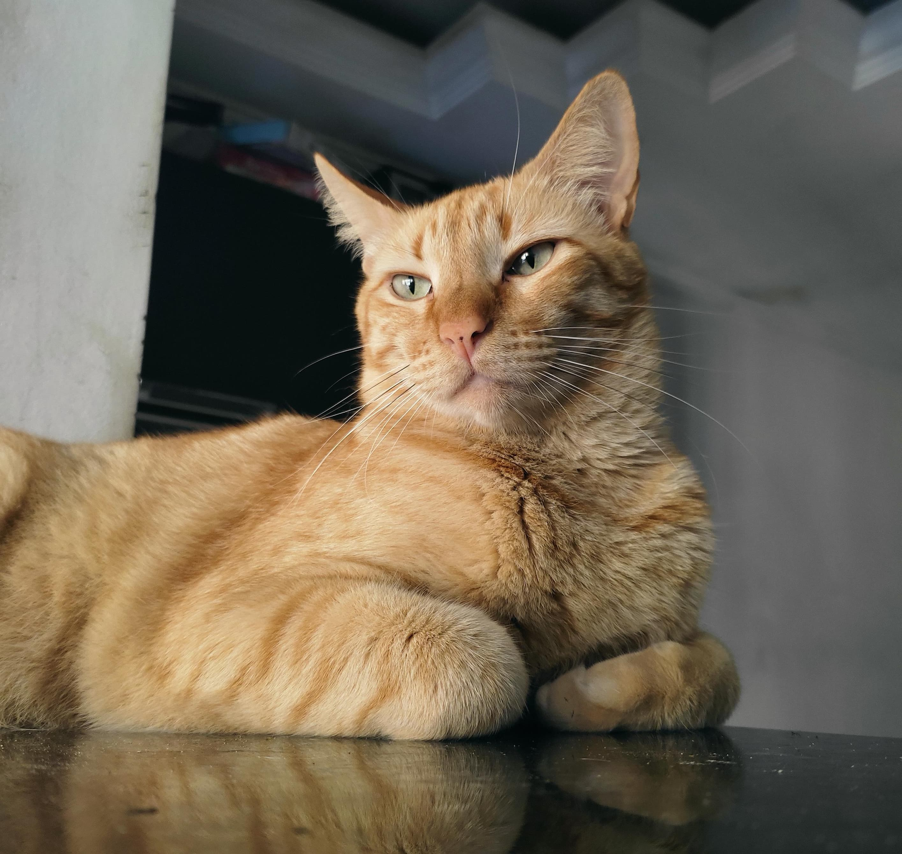
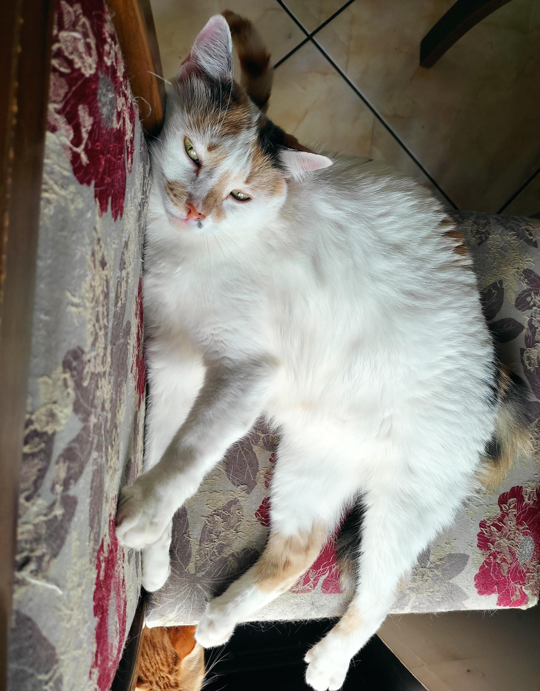
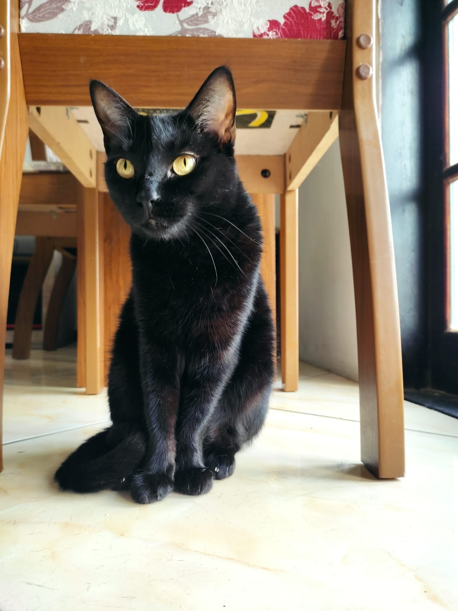
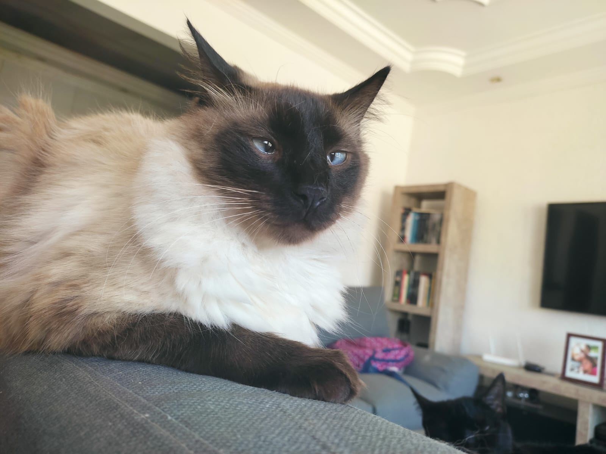
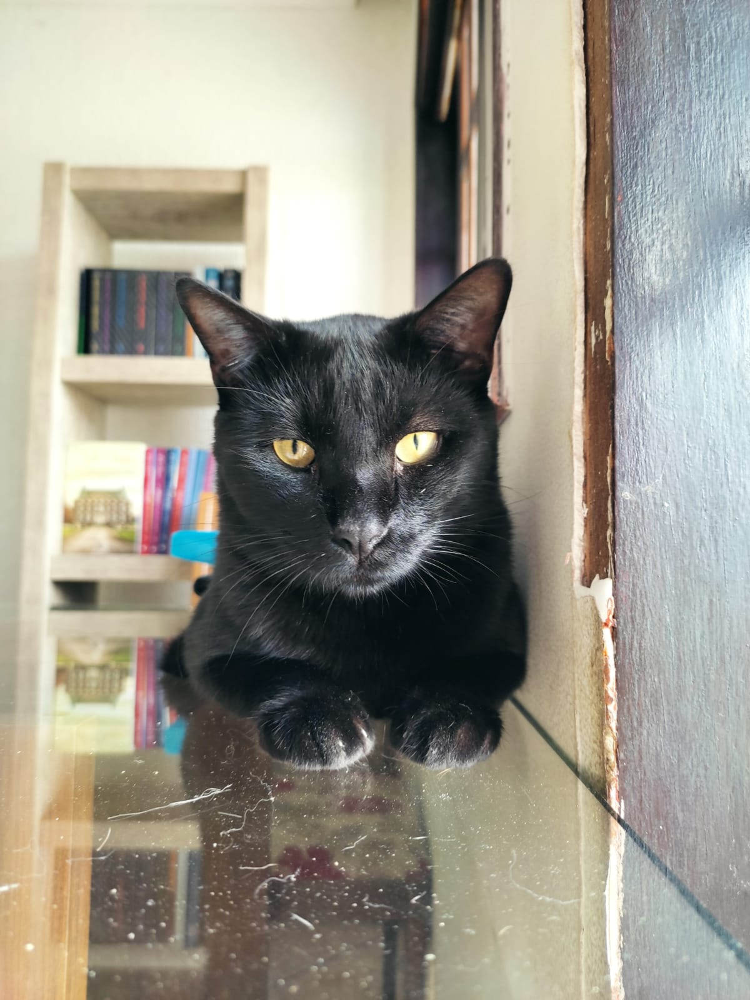
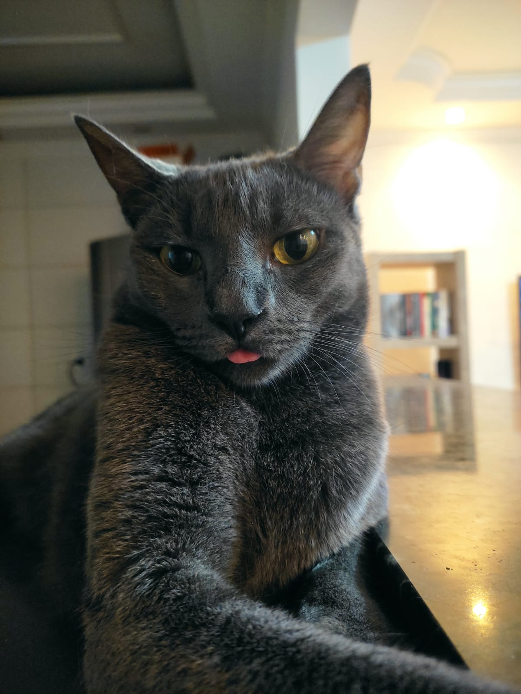
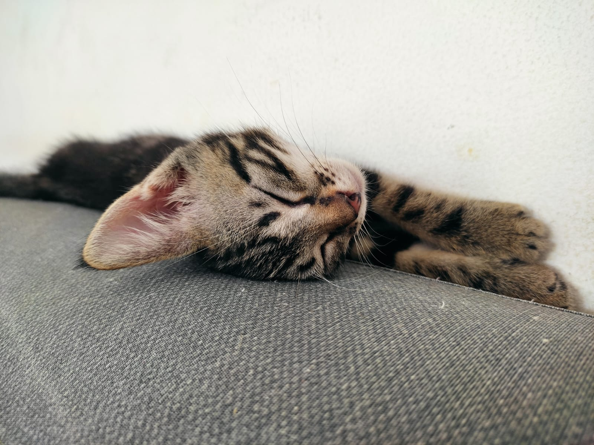
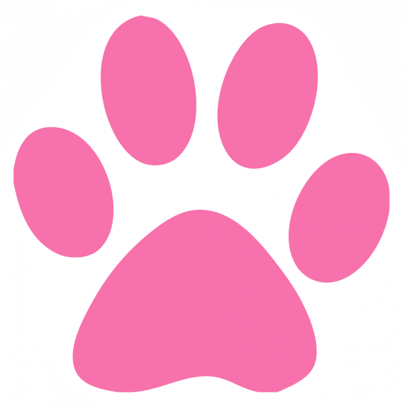

♥♥♥♥♥♥♥♥♥♥♥♥♥♥♥♥♥♥♥♥♥♥♥♥♥♥♥♥♥♥♥♥♥♥♥♥♥♥♥♥♥♥♥♥♥♥♥♥♥♥♥♥♥♥♥♥♥♥♥♥♥♥♥♥♥♥♥♥♥♥♥♥♥♥♥♥♥♥♥♥♥♥♥♥♥♥♥♥♥♥♥♥♥♥♥♥♥♥♥♥♥♥♥♥♥♥♥♥♥♥♥♥♥♥♥♥♥♥♥♥♥♥♥♥♥♥♥♥♥♥♥♥♥♥♥♥♥♥♥♥♥♥♥♥♥♥♥♥♥♥♥♥♥♥♥♥♥♥♥♥♥♥♥♥♥♥♥♥♥♥♥♥♥♥♥♥♥♥♥♥♥♥♥♥♥♥♥
Minha primogênita. Foi resgatada em março de 2018, provavelmente com apenas 1 mês de vida. Foi o maior presente do mundo encontrá-la, pois através dela começou um esquema de pirâmide na minha vida (e eu detesto esquemas de pirâmide)!

O segundo gatinho que chegou na minha vida, o adotei com 1 mês de vida de uma moça que havia resgatado a mãe dele sem saber que ela estava grávida. Ele é o meu laranjinha perfeito, dengoso, resmungão e que ama lamber tudo que tenha leite. 😂

Quando eu adotei Simon, a intenção era dar uma companhia para Ivy, porém quando fui buscá-lo Floquinho estava lá com ele e eu me apaixonei de cara, ela miava tanto para chamar minha atenção... Senti que ela me escolheu ali, então levei ela pra casa junto com Simon. Ainda bem que a adotei, pois ela é o meu chameguinho!
♥

*Inclusive, Simon e Floquinho são irmãos da mesma ninhada!
A quarta integrante exclusivamente porque meu sonho era ter um gato preto. Encontrei uma pessoa doando um filhotinho de gato preto e eu pensei "agora é a minha chance!" e assim Selina entrou na minha vida. Ah! Selina é a única dos gatos adotados/resgatados que sabemos a data de nascimento! Dia 24 de setembro de 2018 minha pretinha chegou ao mundo.


Juninho, que na verdade se chama Ozzy Junior, é filho de Selina e Ozzy (pois é, a gente demorou pra castrar Selina e aí ela engravidou, mas agora ela e os outros estão castrados). Selina teve 5 fihotes, todos pretinhos, mas 4 foram doados e quisemos ficar com um, pois a gente merecia ficar com um netinho, né?! Então por isso ele é Ozzy Junior kkkkkk mas ninguém o chama assim, ele é o nosso Juninho mesmo.

Mel, que na verdade se chama Milena Mel em homenagem a uma ex-aluna minha que tem o mesmo espírito bravinho e safado da minha Melzinha kkkkkk< A Mel é uma dengosa, mas também muito brava com outros gatos, ela foi resgatada pelo meu sogro no final de 2019 e quando chegou a pandemia em 2020, meu sogro estava viajando e acabou ficando pela cidade que ele estava durante 1 anos! Então a Mel acabou ficando na minha casa e nunca mais foi embora. Amo a minha Melaninhaaaa!

Tem apenas alguns meses que eu a encontrei, provavelmente com 1 mês de vida. Ela estava em cima de uma árvore e precisei pedir a um menino que estava a caminho da escola pra pegá-la pra mim kkkkkk a ideia era dar lar temporário até alguém adotá-la, porém ninguém se interessou por ela. Os 7 gatos se acostumaram com ela super rápido, então eu meio que parei de divulgar a adoção. A minha bagunceira é a gatinha mais carinhosa da casa e agora estou muito feliz que ninguém a adotou, pois esse amor ficou todinho pra mim e para minha família.

Espero que vocês tenham gostado de conhecer um pouquinho dos meus nenéns. Eles são minha luz e me ajudam a sobreviver nesse mundo tão díficil. Portanto fica a dica:
